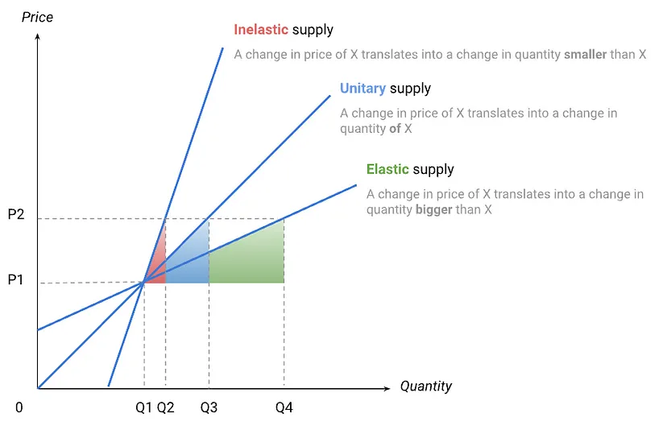

Economics
Misc
- Packages
- {econgoods} - Provides various utility functions and usage with composite goods in economics.
- Current utility functions: Constant elasticity of substitution (CES) utility, Leontief utility, Cobb-Douglas utility, marginal utility for two goods
util_calibrate: Fit parameters of utility functions to the given prices and quantities.
- {econgoods} - Provides various utility functions and usage with composite goods in economics.
- Dynamic stochastic general equilibrium (DSGE) models, which are popular in macroeconomic modeling, are garbage (article)
- Even under extremely ideal conditions they don’t retrieve the parameters and using them to forecast is no better than chance.
Terms
Adverse Selection - A market situation where buyers and sellers have different information. The result is that participants with key information might participate selectively in trades at the expense of other parties who do not have the same information
- e.g. A person waits until he knows he is sick and in need of health care before applying for a health insurance policy. The buyer has more knowledge (i.e., about their health). To fight adverse selection, insurance companies reduce exposure to large claims by limiting coverage or raising premiums
Consumer Price Index (CPI) - A common index that is used to measure inflation, the Bureau of Labor Statistics constructs the market basket using more than 80,000 items.
Deflation - A sustained decrease in the price level of goods and services.
Disinflation - A decrease in the rate of inflation.
Inflation - A sustained increase in the price level of goods and services.
Intertemporal Price Discrimination - Charging a high price initially, then lowering price after time passes.
- A method for firms to separate consumer groups based on willingness to pay
- e.g. last minute travel bookings (opposite direction since last minute bookings usually cost more)
Price Elasticity of Demand (PED) - The percent change in demand given the percent change in price assuming that everything else doesn’t change
- How sensitive the quantity demanded is to its price. When the price rises, quantity demanded falls for almost any good, but it falls more for some than for others.
- The elasticity of a good or service can vary according to the number of close substitutes available, its relative cost, and the amount of time that has elapsed since the price change occurred.
- When the price of a good or service has reached the [point of elasticity, sellers and buyers quickly adjust their demand for that good or service.
- An inelastic product is one that consumers continue to purchase even after a change in price
- Products or services that are elastic are either unnecessary or can be easily replaced with a substitute.
Price Elasticity of Supply (PES) - How quickly producers shift production levels in response to price changes. (source)
- From a producers point of view, the more prices rise, the more the producer would be willing to produce.
- Price elasticity of supply = % Change in Supply / % Change in Price
Sahm Rule - The early stages of a recession are signaled when the three-month moving average of the U.S. unemployment rate is half a percentage point or more above the lowest three-month moving average unemployment rate over the previous 12 months. (source)
- It’s meant to signal a weakening of the labor market. However, while the July 2024 jobs report did show a slowdown in the growth of the labor market, it was the slowing in the growth of the labor force, not layoffs, that drove the rate higher. While the slowdown in job growth indicates a slowing economy, the Sahm Rule may be overstating economic weakness in the labor market. That is a stark difference from past recessions.
Second Degree Price Discrimination - Charging a different price for different quantities at the same time
{kind=link}
{kind=link}
Price Elasticity
By identifying the price elasticity of demand, you can try to determine the amount of price you can increase without hurting the demand, as well as check at what point an increase in price starts to affect the market.
Price is NOT the only variable that influences whether you purchase a product or service. Therefore, looking at quantity purchased at each price to determine price elasticity is not enough.
Formula
\[ \mathcal{e} = \frac{\frac{\Delta Q}{Q}}{\frac{\Delta P}{P}} = \frac{ \mbox{\% Change in Quantity}}{\mbox{\% Change in Price}} \]Guidelines
- If the PED is greater than one (PED > 1), it is known as “elastic”, meaning changes in price causes a significant change in demand.
- If the PED is equal to 1 (PED = 1), then this means any change in price causes equivalent changes in demand.
- If the PED is less than one (PED < 1), it is known as “inelastic”. This means changes in price don’t affect the demand that much.
- If the PED is equal to 0 (PED = 0), known as “perfectly inelastic”, meaning any change in price doesn’t cause a change in demand.
Process
- Filter on the specific subset of sales data relevant to the dimension which you are estimating elasticity (e.g. if estimating the price elasticity for red wine, filter on only red wine sales)
- Perform a log transformation on the future sales target variable and on the current price feature
- Train a multivariable linear regression model to accurately predict future sales
- The price elasticity estimate will be the coefficient of the log transformed, price feature
- Repeat steps 1–4 for each elasticity estimate
Using ML and partial dependence calculations
rf_model <- randomForest(quantity ~ price + other_factor, data = data) # Create partial dependence plot pdp_price <- pdp::partial(rf_model, pred.var = "price", train = data) # Calculate elasticity using the original formula pdp_price$elasticity <- with(pdp_price, (diff(yhat) / yhat[-length(yhat)]) / (diff(price) / price[-length(price)]))- Note that
-length()removes the last value so the calculations are made with equal length vectors. Removal of the last value instead of the first value is used since elasticity is typically defined as the responsiveness of quantity to a change in price. Using the initial quantity and price as the base aligns better with this concept. - See Diagnostics, Model Agnostic for other packages that calculate pdps
- Note that